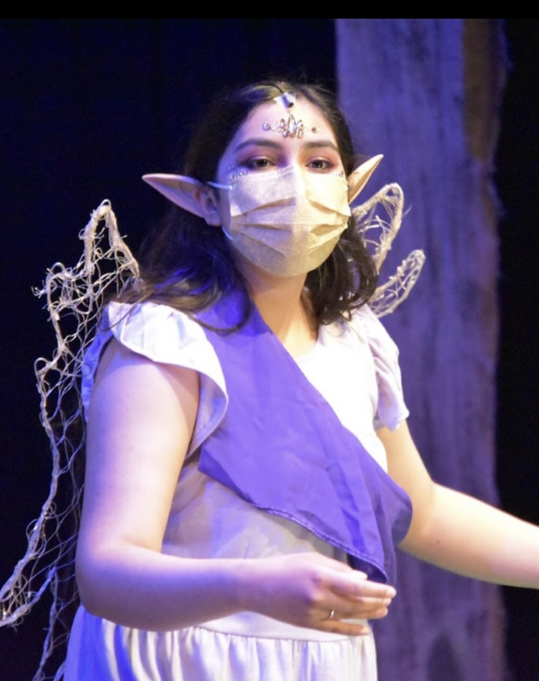

Portfolio


© Phoebe Loustaunau
I have experience in the theater. My experience in drama has been life changing. I decided to give drama a try through the safety of our online musical. I was constantly terrified of having no idea what I was doing, yet also full of excitement of having the chance to sing and act, with the support of a community that encouraged me daily. As time continued on, I felt more and more thrilled every time I performed, so I started to participate in more shows. My dedication and passion for drama grew. Drama allowed me to exist outside of my comfort zone. It gave me the chance to not only have a voice, but to be heard and not disregarded. I consider it a great honor to be able to get to know and understand so many different characters over the years. From them, I have learned to be valiant, gracious, and empathetic. By bringing these characters to life, these characters have also brought life to me. I also learned how to be disciplined enough to show up to rehearsals everyday. Some days were difficult to show up to because I was exhausted after the many tedious hours of school and homeworkI was even asked to be part of the International Thespian Society, which I consider to be a great honor.
I was a part of my school’s National Honor Society where I served as the secretary. I was present during all of the meetings and had to record minutes for all of the meetings. I also participated in making decisions with my team. We decided who to induct into our society based on academic achievements and community service. At times, I would help my fellow leader classmates to lead our meetings and describe in detail our new projects for fundraising.
My experience with the NHS also connects to my experience in our Cancer Awareness Society. I volunteered to create our new icon on the t-shirts our members would wear. This club allowed me to volunteer at festivals and encourage my peers to be more involved with illnesses they may not think about often. This allowed me to develop a passion for speaking out about causes that people may not understand. For me, it was important to be involved in the community because it allowed me to develop a compassion for others.
• Developed a character
• Helped with stage production
• Experience with public speaking
• Responsible for recording minutes
• Described community service opportunities for classmates
• Ran sessions to help students learn to manage their schedules
• Reviewed math and Spanish assignments with students
• Checked in with their grades and recorded progress